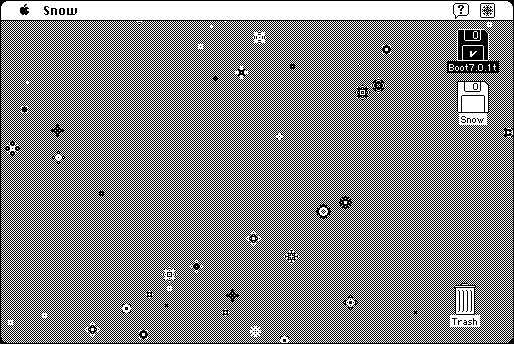

Download
snow-22.zip (287K) Snow 2.2 repackaged into a zipped hfs disk image and checksum file. The disk image can be mounted with Mini vMac.
snow-22.hqx (385K) Snow 2.2 in the original format.
copyright: Dave Warker
mod date: Dec 28, 1997
license: freeware
official url :
warker.com - Classic Software
“Drifts snowflakes down the screen accompanied by the gentle sound of sleigh bells and music”. But there is no music without QuickTime. Requires System 7.

If you find these downloads useful, please consider helping the Gryphel Project, which hosts them.
Here are the md5 checksums for the downloads, signed with Gryphel Key 5:
--------- GRY SIGNED TEXT --------- 0fa2b0d0aa5c23e8288dc449f38fe60f snow-22.zip a69579d81ab7b2b9fdf152aa25eb149b snow-22.hqx ------- BEGIN GRY SIGNATURE ------- Gry/4Xa8CFcUzxdN/DbwxlRbCSBluvdO6w/ZMy3bv2cwoDHwdk7/++FsTzZFwCgg XvQXZbmg+35FUSS8STi/6r5VGmrorexEUOpbhCSgdHqEctpF0YQ9Tt1CL7swT/OR ro66euT8riq8xWioq8Qh1Wi1RPzBI3taJ5wUHJ+tGbSMTV8hj4OstAgzND/MfXDU -------- END GRY SIGNATURE --------